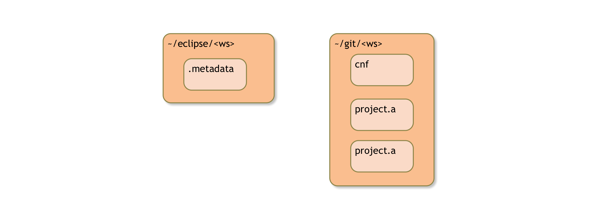
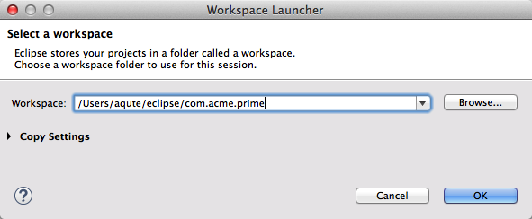
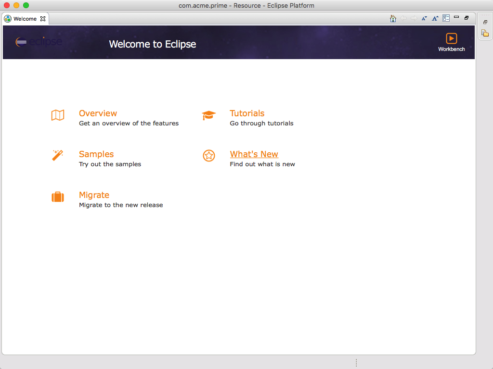
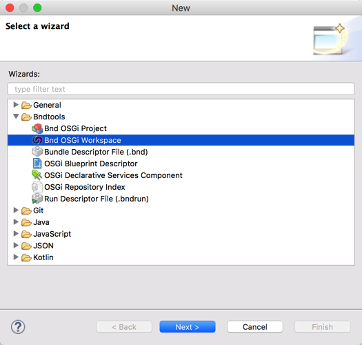
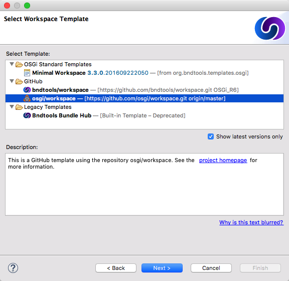
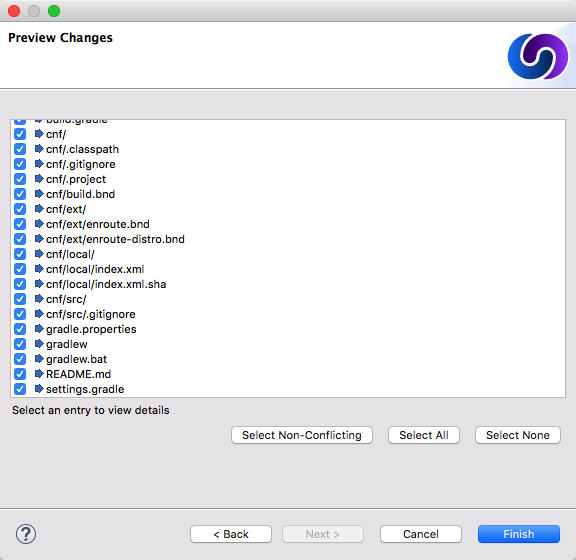
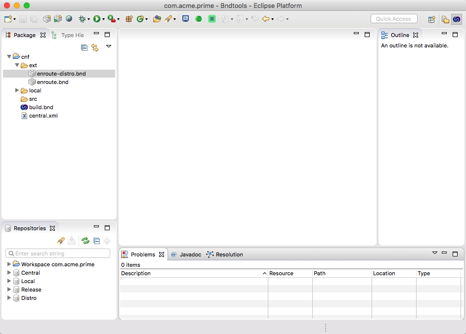

The Workspace
What you will learn in this section
In this section you will learn what a bnd workspace is and how it relates to the Git and Eclipse workspaces. We will address naming and how to use a ready made enRoute workspace template from github to get all the settings we need in one go. At the end of this section you will have a new workspace.
Optionally, you can learn how Eclipse, Git, enRoute, and bnd workspaces relate to each other.
Before you start this section, make sure you’ve checked the prerequisites for OSGi enRoute on your platform.
In the next section you learn how to set up a workspace. For this tutorial you must ensure you have a new workspace. If you’ve done the quickstart tutorial you might already have a workspace. Delete it or use one with another name for this tutorial to not get confused.
OSGi enRoute requires that you group a number of projects in a bnd workspace. A bnd workspace is basically a directory with a cnf directory. We start with a template workspace by getting it from git.
This is the BETA tutorial for OSGi enRoute 2.0.0. To use the right workspace template,
go to Bndtools preferences and select Workspace Templates. You should edit the
OSGi enRoute template and select the next branch.
This tutorial requires Bndtools 3.3.0 or later, the workspace templates were added in 3.2.0
We generally advise you to place things in your home directory (~). However, Eclipse does not recognize the tile (~) as a reference to your home directory so different paths are shown in the pictures.
Two Workspaces???
First get some confusing stuff out of the way. We will have two (2) workspaces:
- Eclipse – The Eclipse workspace. An Eclipse workspace is a directory with a
.metadatadirectory. In OSGi enRoute tutorials we never place any projects in this directory. This directory will never be stored in Git or another SCM, it should therefore only contain your local preferences and information. To make it easy to switch between Eclipse workspaces, it is suggested to place all Eclipse workspaces in one easy to access directory. For example/Ws/eclipse. - bnd – All projects will reside in a single bnd workspace directory. The bnd workspace is stored in Git or an alternative SCM. It must therefore never contain any personal stuff. A bnd workspace is flat, the
cnfdirectory and all project directories must reside in exactly the same parent directory, which is the workspace directory. Sorry, no exceptions. The bnd workspaces could be grouped in a directory for Git. Eclipse recommends~/git.
The structure is depicted in the following illustration:

Opening Eclipse (Or Switching Workspace)
If you start Eclipse you will have to open the Eclipse workspace, see the previous issues. At the start of Eclipse (or when you do File/Switch Workspace) you will see the following dialog:

After filling in the proper path and then closing the dialog by clicking OK, we get an Eclipse restart. After Eclipse is done, we should finally get:

Creating the bnd Workspace
To create a new bnd Workspace we use the New/Other/Bndtools/Bnd OSGi Workspace menu:

Select Bnd OSGi Workspace and click Next. This will bring you to a dialog that allows you to specify the location of the bnd workspace. Here we must select the Create in radio button because it is bad practice to use the same directory for the bnd workspace as the Eclipse workspace as explained before.
Clicking on Next will bring us to the window that selects the template that we will use. In this case we will obviously choose the OSGi enRoute template.

After you selected the template and clicked Next then Bndtools will show you proposed new content of the workspace in a list. If you would update an existing workspace you could control any conflicts.

In our case we just click Finish and we’re done! Our Eclipse should look like:

How Does it Work?
It helps to understand how the workspace is layed out. An Eclipse workspace is a directory where Eclipse stores its metadata, e.g. the plugins persistent storage or the history. Though it can be used to also store the actual projects, it is in general not a good idea, especially if you use a source control system. EGit can actually become quite slow when you include the Git workspace.
Therefore, the best way to work with projects in Eclipse is not to store them in the Eclipse workspace folder but to import them from another directory.
For bnd, a workspace is a directory with a cnf folder and a number of projects. This is a flat space; hated by many but it works quite well because it is very simple and hard to get wrong. Don’t count on it changing so do not try to work around it, you’ll regret it. The cnf folder contains a build.bnd file and a ext directory which together define the workspace properties.
A bnd workspace is like a module; it imports bundles (and JARs) from a repository and it exports bundles to the same or another repository. On the inside we have projects that are private to the workspace. The projects should be cohesive so that they can share information via the cnf project.
The Git workspace is a directory that has a .git sub directory. When used with bnd, the Git workspace and the bnd workspace overlap. That is, the bnd workspace is a single Git workspace. Projects do not have their own repositories.